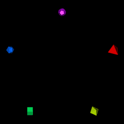

This package is a curation made based on the poly package found on http://www.netlib.org/polyhedra/ (Original Help message), and the polyhedra database found on http://dmccooey.com/polyhedra, both of which provide polyhedra databases on its own format. As such, Rpolyhedra provides with the following:
- A module to scrape the polyhedra for the different sources found with features for incremental correction of issues found and to be found in scraping process.
- A database of the scraped polyhedra.
- An R6 polyhedron representation with ‘rgl’ package visualizing capabilities.
| Release | Usage | Development |
|---|---|---|
 |
 |
|
 |
Preview
Through Rpolyhedraexplorer you can navigate the polyhedra database without actually installing R environment.
How to get started
install.packages("Rpolyhedra")
How to get started (Development version)
Install the R package using the following commands on the R console:
devtools::install_github("ropensci/Rpolyhedra", build_opts = NULL)
Loading the database
library(Rpolyhedra)
# if want to switch to fullDB in user filespace, it will ask you for downloading the full database to your home directory switchToFullDatabase()
A simple example of 5 regular polyhedra
To get started execute the following commands:
# 0. Load libraries library(knitr) library(rgl) # For forarding webgl output to knitr knit_hooks$set(webgl = hook_webgl) library(dplyr) #> #> Attaching package: 'dplyr' #> The following objects are masked from 'package:stats': #> #> filter, lag #> The following objects are masked from 'package:base': #> #> intersect, setdiff, setequal, union
# 1. Obtain 5 regular solids polyhedra.2.draw <- getAvailablePolyhedra(source = "netlib") polyhedra.2.draw <- polyhedra.2.draw %>% filter(scraped.name %in% c("tetrahedron", "octahedron", "cube", "icosahedron", "dodecahedron")) # 2. Setup colors and scales n <- nrow(polyhedra.2.draw) polyhedron.colors <- rainbow(n) polyhedron.scale <- 5
# For interactive RGL window #```{r, render, webgl=TRUE} # 3. open and setup RGL window open3d() #> glX #> 1 par3d(FOV = 1) rgl.bg( sphere =FALSE, fogtype = "none", color=c("black")) rgl.viewpoint(theta = 0, phi=0, zoom=0.8, fov=1) # 4. for each polyhedron, setup rotation, position and render for (i in seq_len(n)) { # Obtain polyhedron polyhedron.row <- polyhedra.2.draw[i,] polyhedron.name <- polyhedron.row$scraped.name polyhedron <- getPolyhedron(source = polyhedron.row$source, polyhedron.name) # Setup angles, position into transformationMatrix current.angle <- i/n * 2 * pi tm <- rotationMatrix(current.angle, 1, 0, 0) x.pos <- round(polyhedron.scale * sin(current.angle), 2) y.pos <- round(polyhedron.scale * cos(current.angle), 2) tm <- tm %*% translationMatrix(x.pos, y.pos, 0) # Render print(paste("Drawing ", polyhedron.name, " rotated ", round(current.angle, 2), " in (1,0,0) axis. Translated to (", x.pos, ",", y.pos, ",0)", " with color ", polyhedron.colors[i], sep = "")) shape.rgl <- polyhedron$getRGLModel(transformation.matrix = tm) shade3d(shape.rgl, color = polyhedron.colors[i]) } #> [1] "Drawing tetrahedron rotated 1.26 in (1,0,0) axis. Translated to (4.76,1.55,0) with color #FF0000" #> [1] "Drawing octahedron rotated 2.51 in (1,0,0) axis. Translated to (2.94,-4.05,0) with color #CCFF00" #> [1] "Drawing cube rotated 3.77 in (1,0,0) axis. Translated to (-2.94,-4.05,0) with color #00FF66" #> [1] "Drawing icosahedron rotated 5.03 in (1,0,0) axis. Translated to (-4.76,1.55,0) with color #0066FF" #> [1] "Drawing dodecahedron rotated 6.28 in (1,0,0) axis. Translated to (0,5,0) with color #CC00FF" #rgl::rglwidget() #rgl::rgl.snapshot("man/figures/README-5-polyhedra.png")

sources
netlib
Includes 142 polyhedra definitions. The PHD format was created to describe the geometric polyhedron definitions derived mathematically by Andrew Hume and by the Kaleido program of Zvi Har’El.
PHD files were generated using poly2 library (no longer maintained). Although the code is available, specific programming skills are required to run it.
PHD files can be found in extdata/www.netlib.org/polyhedra/index.html
dmccooey
Includes 767 polyhedra definitions. The polyhedra database built by David Mccooey has an open format which has been scraped to feed RPolyhedra database
dmccooey files can be found in extdata/dmccooey.com/polyhedra/
Troubleshooting
rgl
Ubuntu
Please note that the ‘Rpolyhedra’ project is released with a Contributor Code of Conduct. By contributing to this project, you agree to abide by its terms.